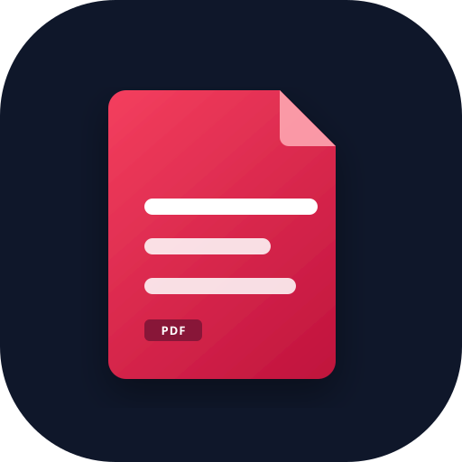

Nessun PDF scaricato
Premi Aggiorna per scansionare la repository GitHub e scaricare i PDF sul tuo dispositivo per la lettura offline, oppure prova subito con i dati di esempio.

Premi Aggiorna per scansionare la repository GitHub e scaricare i PDF sul tuo dispositivo per la lettura offline, oppure prova subito con i dati di esempio.